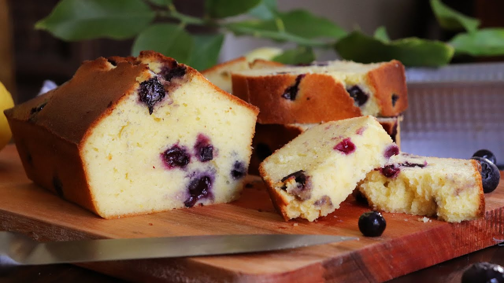

Recetas
Budín de Arándanos
Ingredientes
- 220g de harina integral
- 100g de copos de avena
- 2 cucharadas de aceite de girasol
- 1 huevo y 1 clara
- 90g de azúcar mascabado
- 200g de yogur natural
- 150ml de jugo de naranja
- 1 ½ cucharadita de levadura
- ½ cucharadita de sal
- ½ taza de arándanos rojos deshidratados

Preparación
- Precalentar el horno y engrasar un molde rectangular.
- Batimos el huevo y la clara con el azúcar hasta que estén esponjosos; añadimos el yogur, el jugo y el aceite y batimos hasta incorporarlo bien. Tamizamos en un recipiente aparte todos los ingredientes secos y formamos un hueco en el centro.
- Vertemos la primera mezcla y trabajamos la masa con movimientos envolventes hasta quedar homogéneo. Por último, añadimos los arándanos rojos, repartiéndolos por toda la masa.
- Vertemos en el molde igualando la superficie y horneamos a 180° 40-55 min.